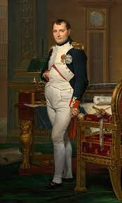
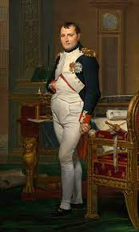

Personliche Informationen
Kimlik Bilgileri:
Samet YAPRAK
✉ sametyaprak@gmail.com
☎ +49 162xxxxxx
Wer bin Ich?
Napolyon bir devlet adamı olarak tüm Fransa'da ve Avrupa'da büyük liberal
reformlar uyguladı. Yönetimi sırasında bir halk eğitim sistemi kurmuş,
feodalizmin kalıntılarını ortadan kaldırmış, Yahudi (bknz. Napolyon ve
Yahudiler) ve diğer dini azınlıkları özgürleştirmiş, gelişmekte olan orta
sınıfın yasalar önünde eşitliğini sağlamış ve dini otoritelere karşı
devletin gücünü merkezileştirmiştir. En kalıcı hukuki başarısı,
Doğu Asya'da Japonya'dan, Kuzey Amerika'da Québec'e kadar
dünyadaki hukuk sistemlerinin dörtte birine çeşitli şekillerde uyarlanmış
olan Napolyon Kanunlarını hazırlatmasıdır.
Berufserfahrung
Adanın Ceneviz Cumhuriyeti’nden Fransa’ya geçtiği yılın ertesinde
Korsika’da, Toskana asıllı soylu ve görece mütevazı bir İtalyan ailenin
oğlu olarak dünyaya gelmişti. Fransız ordusunda topçu subayı olarak
çalıştığı sırada gerçekleşen Fransız Devrimi’ni 1789’da ortaya çıkışından
itibaren destekleyip doğum yeri Korsika’ya yayılması için çalıştı ve
1793’te adadan sürgün edildi. İki yıl sonra (“cumhuriyet takvimi”ne göre
13 Vendémiaire günü) Paris çetelerini topa tutarak Fransız hükûmetini
çöküşten kurtaran Napolyon, henüz 26 yaşında iken İtalya seferi için
hazırlanmış Fransız ordusunun komutanlığına getirildi.
Kompetenzen
Sprache
- Turkische (Muttersprache)
- Englisch C1
- Deutsch B1
Computer Sprache
- Java ★★★★★
- Javascript ★
- SQL ★★★
- HTML ★★
- CSS ★
Framework
- Selenium TestNG ★★★★★
- Selenium Cucumber ★★★★★
- Spring ★★
- Spring Boot ★★★
- Spring JPA ★★
- Hibernate ★★★★
- React ★
Yapilan Calismalar Ornekler
Automation Test Calismalari Icin
tiklayinJavascript Calismalari Icin (calculator)
tiklayin sametyaprak@gmail.com
.jfif)
.jfif)
.jfif) 
